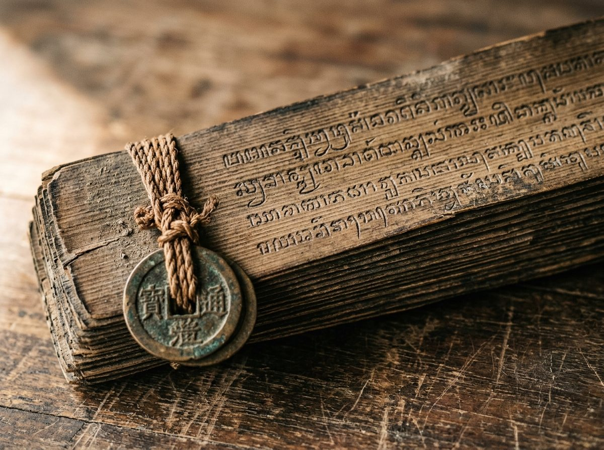

Tradisi aksara Bali: naskah lontar
Menulis aksara Bali
Telusuri 10 aksara wianjana (huruf konsonan) dengan jari, mouse, atau stylus. Garis putus-putus jadi panduan, lalu kamu bisa lihat seberapa dekat goresanmu.

Aksara Ha
ᬳ U+1B33Prana, napas awal kehidupan dan ketuhanan
Tarik goresan mengikuti garis putus-putus
Mulai dari titik merah dan ikuti garis putus-putus. Tiap aksara terdiri dari beberapa bagian, jadi kamu boleh mengangkat jari di antaranya.
0%
Nilai ketepatan
Menghitung...
Analisis presisi tarikan garis aksara Bali.
Kedekatan dengan garis
0%
Kelengkapan bentuk
0%
Hijau: dekat dengan garis. Kuning: agak jauh. Merah: jauh dari garis.